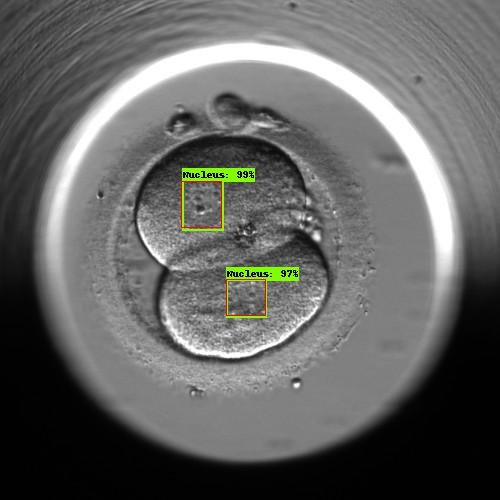
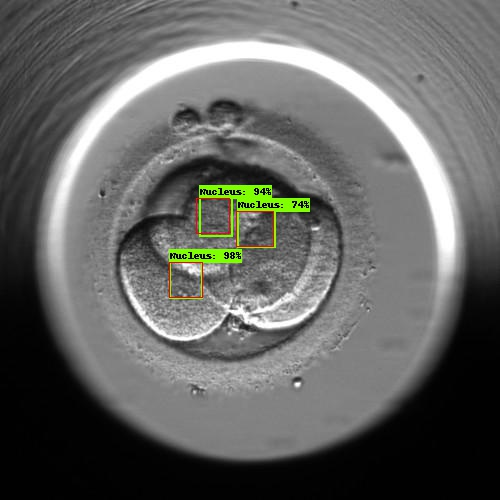

The first thing we did was run our baseline model on the training data to confirm we could atleast predict our inputs.
Obviously this would be an overfitting unreliable for generalization but could still serve as a positive indication for the model.
The average Intersection over Union (IOU) for the Training set was 83%


The average Intersection over Union (IOU) for the Training set was 83%
We then ran the model on new wells the system had never seen before. We used the traditional Intersection over Union metric again we got:
Average IOU for Well_03 = 59%
Average IOU for Well_04 = 1%
It is likely that the lower IOU on Well_04 was due to differing light conditions for those images.